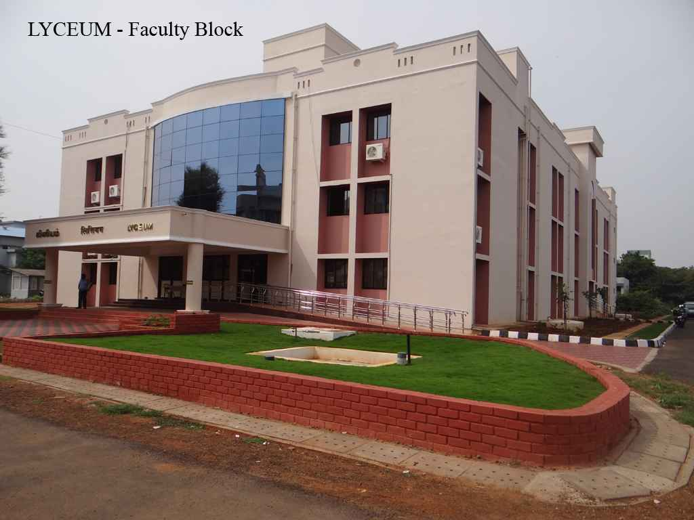
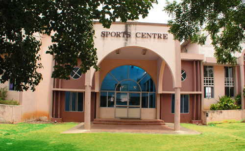
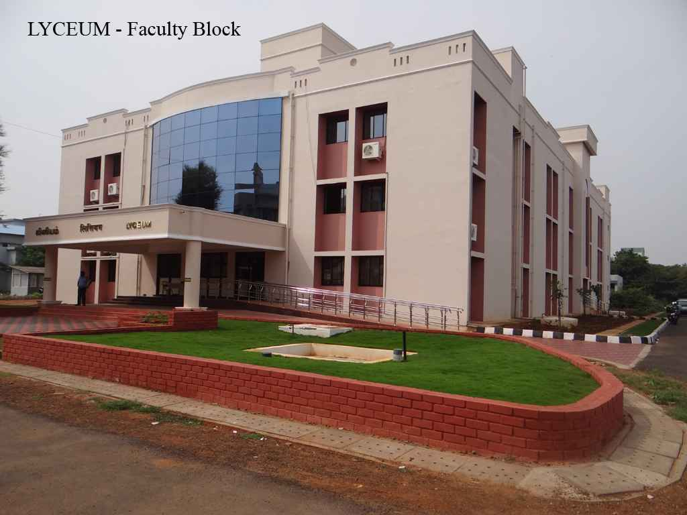
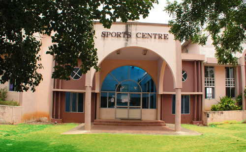

Let me talk about my journey to NITT.
12th :
"Life is beautiful" --- What ran into my mind before I entered 12th grade
Everything changed after December,2015
.Life became a nightmare. Except Physics,Chemistry and Math there was nothing in my heart. Sitting in the same place from morning till night with giant books as companions.Revision 1,2,3 and so on...
The only observable change that I noticed was not in the level of knowledge it was only in my weight. My weight increased exponentially.
The only goal I had was to join SSN. I never even gave a thought about NITT because I didnt want to be a hosteler.
After giving my board exam I felt really happy. But my happiness was short lived. I was forced to write JEE MAINS(offline) I tried my level best to bunk the exam but all my attempts failed.
I wrote JEE mains.

JEE mains results came .. With no preparation I managed to get 146 .My luck ditched me.. (what ditched?? )Ya it really ditched me.
The much awaited CBSE results came. I somehow managed to score 479.I felt very happy . My cutoff was only 190.5 so I wasn't sure whether I will get SSN or not.
After a long wait and rounds of interview I got a seat in IT department in my dream college SSN...
And again My happiness died away soon.
The very next day AIR for MAINS was released.I got 12550 .
That made me cry.The worst day of my life(later turned out to be the best). The tears were not tears of happiness. My sisters started insisting me to take whatever branch I get at NITT.
The very thought of hostel haunted me.Sleepless nights,endless arguments, river of tears.. everything finally ended on July 8th My sisters, my grand parents and my mom succeded in convincing me.
July 27th- First day of Orientation programme.
Throughout the orienation program the only thing i did was crying,calling mom,crying even more on the phone.. I didn't talk with anyone,avoided people and cried all the time.
One day I decided to QUIT. Quit my studies.
That day i heard my mom and grandma crying and were scared of my future. That moment made me realise that they will be happy only if i am happy here
"HAPPINESS IS A CHOICE. WE CAN BE HAPPY ONLY WHEN WE DECIDE TO BE HAPPY"
I decided to be happy.
Special thanks to my roommates ,my seniors and my best childhood school friend..Without these people I wouldn't have adapted to hostel life.
And Now.....
Thanks to my luck that ditched me.


 


